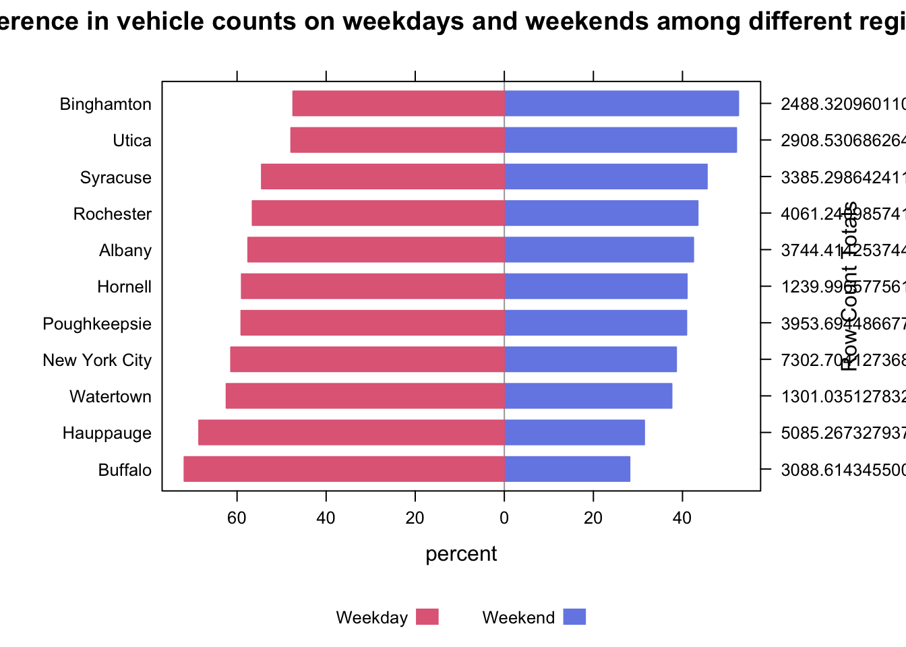
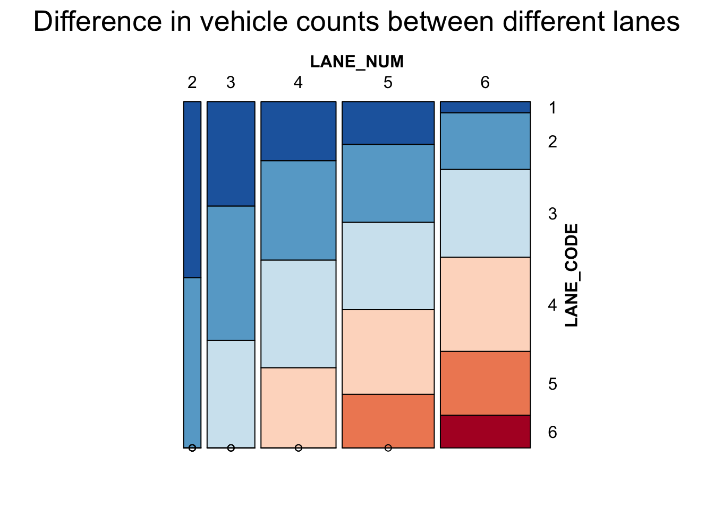

Chapter 5 Results
5.1 The overall trend of the average count per hour per street from 2018 to 2020
We first analyzed the overall trend of the traffic data in the New York state to get an overview. In general, we can see the streets in the New York State are busy in the first three months in each year. The general trend and level are very similar between 2018 and 2019, but the counts for the first half of the year of 2020 is much lower than other years, which suggested us that there may be some effects from the COVID-19.
We have also noticed that there is no data for the January and February for 2020, this may due to the COVID-19 or other errors in the dataset, but there is no official explanation for them.
5.2 The trend of the average count vs the COVID-19 cases
To check if COVID-19 indeed had an impact on the traffic volume, we plot the total amount of COVID-19 comfirmed cases each month from March 2020 to December 2020. We then plot the average vehicle count during that period.

From the line chart above, we can conclude that when the pandemic totally outbreak in April 2020, there was a sudden drop on the average car counts on the street. This was probably because of the Covid Shutdown policy in New York. Also, there was a decrease of the average car counts after October, and a sudden increase of the number of new cases. Therefore, we make a conclusion that people will be more likely to stay home and do not drive their cars when there is an outbreak of the pandemic.
5.3 The comparison between rural and urban areas for their trend of the average count
- First, we used a parallel coordinate plot, with local min/max scale, to show the relationships between the variables and see which regions have relatively high/low count in each kind of areas.
Average count for a street per hour for rural and urban areas in different regions
In general, it seems the number of counts in the rural expressway is positively correlated with the number in other rural roads, and the number of counts in the urban expressway is positively correlated with the number in other urban roads, The New York City is seemingly different from other regions as there is 0 volume count for the rural area.
- Next, we used the ‘globalminmax’ scale to make a general quantitaively comparison between the count for rural and urban areas.

From the second plot, we can tell more than half of the regions in New York State have very high vehicle volume in the urban area, but the others tend to have similar amount in both rural and urban areas. For most of the regions, the volume are concentrated at the express ways.
5.4 The distribution of vehicle count among different regions in New York State from 2018 to 2020
Since New York City is so different among regions in New York State, we then use boxplots to study the distribution of vehicle count among different regions, so that we could better know how New York City is different in vehicle count.

From the plots above, streets in New York City are always the busiest among regions in New York State from 2018 to 2020.
5.5 The busiest streets in New York State from 2018 to 2020
 From the plots above, we can see there are more busy streets from New York City(NYC) and Hauppauge in 2018 and 2019, and there are some busy streets from other regions in 2018 and 2019. However, it turns out that the 15 busiest streets are all from NYC in 2020.
From the plots above, we can see there are more busy streets from New York City(NYC) and Hauppauge in 2018 and 2019, and there are some busy streets from other regions in 2018 and 2019. However, it turns out that the 15 busiest streets are all from NYC in 2020.
We can see there is a trend that NYC become dominate the first 15 busiest streets from 2018 to 2020.
This suggests that there may be something different between NYC and other counties, and we should take a closer look at NYC.
5.6 The distribution of vehicle count among different day of week in New York State from 2018 to 2020
We then conduct research on the difference of traffic volume among different day of week. First, we look at the distribution of vehicle count among different day of week using a boxplot.

From the boxplot above, streets in New York States are busiest on Monday, Tuesday, and Wednesday, and least busy on Friday from 2018 to 2020.
5.7 Difference in vehicle counts on weekdays and weekends among different regions
Also, we would like to know if there is some difference in the proportion of vehicle counts on weekdays and weekends among different regions.

From the above diverging stacked bar chart, we can see the difference in vehicle count on weekdays and weekends for different regions in New York State. Some regions like Buffalo, Hauppauge, Watertown, and New York City have much more cars on weekdays than weekends, probably because these regions are basically work and live spaces, which involve lots of commute vehicle count. Other regions like Binghamton and Utica have more cars on weekends than weekdays.
5.8 The average count for different time slots in a week

From the heat map above, we can see the counts are concentrated from 16:00 to 18:00 on workdays, and Monday tends to have a longer time of busy hours than any other day in a week. This may be because many people would like to go home after work or go to someplace to relax in the period of 16:00 to 18:00. The counts are also concentrated from 8 am to 9 am for the workdays, this is highly likely because people need to go to work. However, this trend is less obvious than the concentrated count from 16:00 to 18:00 on the workdays. We also noticed that the number of hours with relatively high counts tends to decrease from 2018 to 2020, and it decreased a lot in 2020 compared with 2019. This may be due to the pandemic, and more people need to work at home so they would not need to use the street.
The street tends to be much less busy on Saturday and Sunday, this may be because going to work is the main reason people need streets, but it is also likely that people still use the street a lot on weekends but the needs are less concentrated on specific hours.
Based on the plots, it seems reasonable to make a suggestion to the department of transport such that putting more police to help with traffic on 8 am-9 am and 15 am-19 am on weekdays.
As we have seen the New York City seems to be different from other regions from the bar plots above, we made the same treemap for only New York City to see if we can get more information about this difference.

The treemap for the region of New York City behaves different pattern from the treemap before. We can see the number of busy hours is high in both 2018 and 2020 but low in 2019, and it is extremely busy for Monday and Tuesday from 15 pm to 18 pm. We did not see the pattern that the pandemic made people use the street less than before, and the street tends to be busier in 2020 than in 2019. However, there are also some patterns that New York city shares with the entire New York State, the streets in New York City also tend to be busier on Monday and Tuesday than on other days, and the busy hours are longer in the afternoon than in the morning.
5.9 Difference in vehicle counts between different lanes

From the above mosiac plot, we can see that there are more cars in the middle lanes of a street, and fewer cars in the side lanes of a street. Also, there are more cars in streets with many lanes (i.e. those big streets), and fewer cars in streets with few lanes (i.e. those small streets), which is intuitive because big streets are more likely to be busy streets.